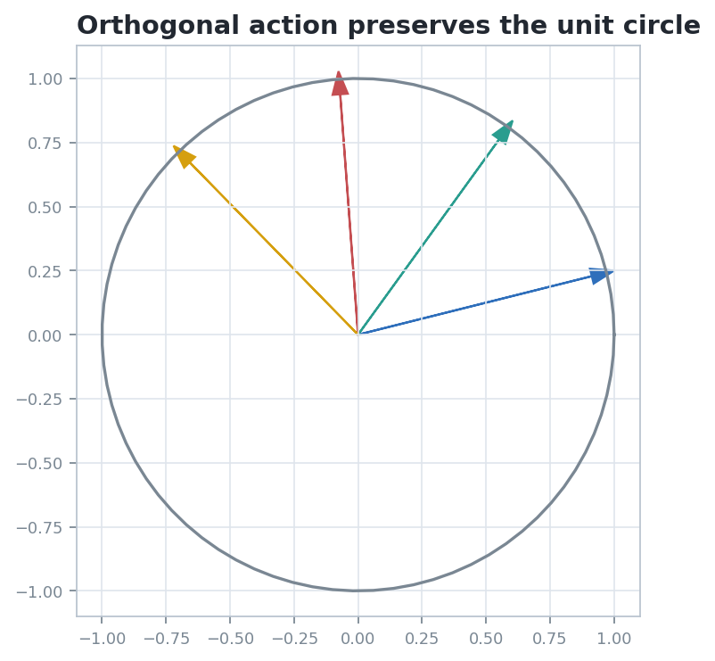
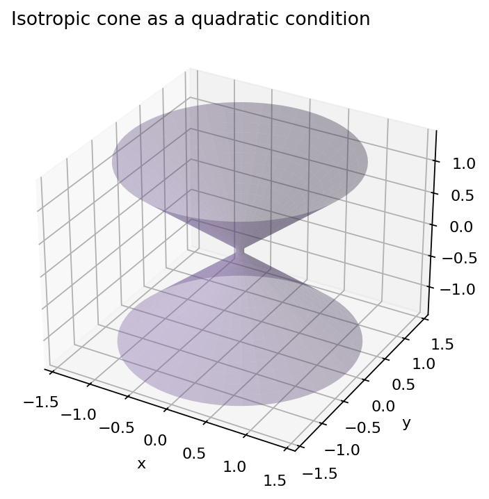

Euclidean Vector Spaces
How inner products turn linear algebra into metric geometry.
Source orientation: printed 151-199; PDF 163-211.
Notebook: 08-euclidean-vector-spaces.ipynb
From Measurement To Structure
1Metric Device
An inner product gives lengths, angles, orthogonal complements, and Gram determinants.
2Legal Motions
Orthogonal maps are exactly the linear maps preserving that measurement.
3Angle Geometry
The dot product gives unsigned angles; orientation and determinants recover signed data.
4Similarities
Uniform scale plus orthogonal motion preserves angle while changing size predictably.
5Quaternions
Unit quaternions encode rotations through multiplication and conjugation.
6Cones And Volume
Quadratic conditions and volume forms expose what the metric preserves.
What changes when a vector space is required to remember the values of \( \langle u,v\rangle \)?
Euclidean Structure Is A Positive Pairing
A finite-dimensional real vector space \(E\) becomes Euclidean when it carries a symmetric bilinear form satisfying \( \langle v,v\rangle > 0 \) for every nonzero \(v\).
Coordinate Shadow
In a basis, the inner product appears as a symmetric positive matrix \(G\):
Changing basis changes \(G\), not the geometric pairing itself.
Lengths, angles, and volumes should be read as quantities produced by the pairing, not by the drawing alone.
The squared \(k\)-volume of \(v_1,\ldots,v_k\) is \( \det(\langle v_i,v_j\rangle) \), so metric data controls higher-dimensional size.
The Orthogonal Group Preserves The Pairing

A linear map \(A:E\to E\) is orthogonal when
With Gram matrix \(G\), this becomes \(A^{T}GA=G\).
- \(\|Av\|=\|v\|\)
- orthogonality of vectors is preserved
- Gram determinants, hence Euclidean volumes, are preserved up to orientation sign
Angles Are Normalized Inner Products
For nonzero vectors \(u,v\), the Euclidean angle is determined by
Cauchy-Schwarz is the existence theorem behind this formula.
In an oriented Euclidean plane, the pair \( (\langle u,v\rangle,\det(u,v)) \) records both cosine and sine data. That pair distinguishes clockwise from counterclockwise rotation.
A Rotation Changes Coordinates But Not Length
Take \(v=(1,\tfrac14)\), so \( \|v\|^2=1+\tfrac1{16}=\tfrac{17}{16}\).
Then \(R_\theta^{T}R_\theta=I\), hence \( \|R_\theta v\|^2=\|v\|^2\).
Recorded Notebook Check
The final sanity report records length before, length after, and error \(0.0\).
To prove a quantity is invariant, write the transformation into the defining formula and cancel using the structure equation.
Similarities Preserve Angle, Not Size
A linear map \(S\) is a similarity with ratio \(\lambda>0\) when
Equivalently, \(S=\lambda Q\) with \(Q\in O(E)\).
\(\det Q=1\) gives a direct similarity; \(\det Q=-1\) gives an inverse similarity.
Unit Quaternions Package Rotations
For a unit imaginary axis \(a\) and angle \(\phi\), set
Then imaginary vectors rotate by \(x\mapsto qxq^{-1}\).
Conjugation by a unit quaternion preserves the Euclidean norm and composes rotations by multiplication.
Determinant Separates The Two Kinds Of Orthogonal Motion
\(SO(E)=\{Q\in O(E):\det Q=1\}\) preserves both metric data and orientation.
Plane rotations and quaternion rotations live here.
Orthogonal maps with determinant \(-1\) preserve lengths and angles but reverse orientation.
Reflections are the simplest examples.
Lecture Check
An orthogonal transformation can preserve every length and angle while changing handedness.
That is why the metric group \(O(E)\) and the oriented metric group \(SO(E)\) are not the same object.
Zero Length Is A Diagnostic For The Form

For a positive-definite inner product, \( \langle v,v\rangle=0 \) implies \(v=0\).
A quadratic form such as \(Q(x,y,z)=x^2+y^2-z^2\) has many nonzero vectors with \(Q=0\), forming a cone.
The same habit applies: name the quadratic measurement, move the object, and inspect what the relevant group preserves.
Most Errors Come From Preserving The Wrong Thing
A new basis is not automatically an orthogonal basis. Check \(P^{T}GP\), not just invertibility of \(P\).
The angle formula divides by norms, so it only applies to nonzero vectors.
The cosine of an angle does not remember clockwise versus counterclockwise direction.
Before using a theorem, identify the exact preserved object: inner product, norm, angle, orientation, scale ratio, or quadratic form.
Instructor Prompt
When a transformation is presented as geometric, ask which equation certifies it.
This turns visual intuition into a proof obligation.
Three Fast Checks For Euclidean Structure
Let \(G=\begin{pmatrix}2&0\\0&1\end{pmatrix}\). Find a nontrivial matrix \(A\) satisfying \(A^{T}GA=G\).
For \(u=(1,0)\) and \(v=(1,1)\), compute both \( \langle u,v\rangle \) and \( \det(u,v) \). What orientation does the pair record?
Classify \(S=\begin{pmatrix}0&-3\\3&0\end{pmatrix}\): orthogonal, similarity, direct, or inverse?
- Write the preservation equation.
- Use the inner product and determinant together.
- Separate scale from orthogonal motion.
What The Inner Product Adds
$$\langle u,v\rangle \Rightarrow \|v\|,\ \theta,\ \mathrm{vol} \Rightarrow O(E),\ SO(E),\ \mathrm{Sim}(E).$$
- Metric structure makes length, angle, and orthogonality meaningful.
- Orthogonal groups are the linear symmetries of that metric.
- Similarities preserve angle after allowing one uniform scale factor.
- Quaternions and cones show how metric ideas reorganize higher-dimensional geometry.